측량및지형공간정보산업기사 (2002-05-26 기출문제)
1과목: 응용측량
1. 다음 그림과 같은 단면의 면적은? (단, 단위는 m임)
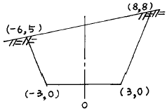
- 127.0 m2
- 73.5 m2
- 68.0 m2
- 63.5 m2
(정답률: 알수없음)

2. 도형의 면적을 구할 때 그림에서 곡선 AB를 2차곡선으로 가정하고 그 면적 ABEF를 구하는 공식은?
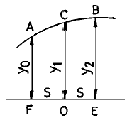
 S(y0+2y1+y2)
S(y0+2y1+y2) S(y0+3y1+y2)
S(y0+3y1+y2) S(y0+4y1+y2)
S(y0+4y1+y2) S(y0+4y1+y2)
S(y0+4y1+y2)
(정답률: 알수없음)
3. 용적측량에서 등고선법은 다음의 어떤 경우에 가장 유용한가 ?
- 수로공사의 토공량을 산정할 때
- 넓은 면적의 토공량을 산정할 때
- 도로 및 철도공사에서 토공량을 산정할 때
- 저수지 용량을 산정할 때
(정답률: 알수없음)
4. 그림과 같이 단곡선을 설치하려고 하는데 교점 I.P가 연못 내에 있어 양접선상에 C, D 점을 설치하여 다음 결과를 얻었다. CA의 거리는? (단, CD=200m, ∠ACD=150° , ∠CDI.P=90° , R=300m 임)
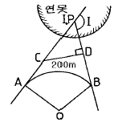
- 164.8m
- 265.3m
- 288.7m
- 314.6m
(정답률: 알수없음)
5. 토공작업을 수반하는 종단면도에 계획선을 넣을 때 고려해야할 사항으로 틀린 것은?
- 계획구배는 가능한 요구에 부합시킨다.
- 절토량과 성토량의 균형을 맞추기 위해서는 제한경사를 무시해도 된다.
- 절토는 성토와 대략 같도록 한다.
- 절토는 성토에 될 수 있는 한 유용하기 위하여 운반 거리를 고려한다.
(정답률: 알수없음)
6. 도로의 구배계산을 위한 수준측량 결과가 그림과 같을 때 A,B 두 점간의 구배는? (단, A,B 두 점간의 경사거리는 42m이다)
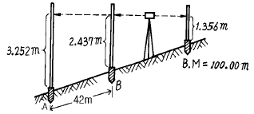
- 0.76%
- 1.94%
- 2.02%
- 10.38%
(정답률: 알수없음)
7. 노선측량에서 연장 2km에 대하여 결합트래버스 측량을 실시할 때 폐합비의 한도를 1/5,000로 한다면 허용할 수 있는 폐합차는?
- 0.2m
- 0.3m
- 0.4m
- 0.5m
(정답률: 알수없음)
8. 다음 중 노선의 곡선 설치와 직접 관계가 없는 것은?
- 편각설치법
- 캔트
- I.P
- 지반고
(정답률: 알수없음)
9. 하천측량에서 유수단면적(A)과 유속(V)을 알 때 유량(Q)을 구하는 식은?
- Q = A / V
- Q = A · V
- Q = V / A
- Q = (1 / n)A · V
(정답률: 알수없음)
10. 평균유속 측정법 중 3점법은 다음의 어느 유속을 알아야 하는가? (단, 수심은 H임)
- 수면에서 0.1H, 0.4H, 0.8H 지점의 유속
- 수면에서 0.2H, 0.4H, 0.8H 지점의 유속
- 수면에서 0.2H, 0.6H, 0.8H 지점의 유속
- 수면에서 0.3H, 0.6H, 0.9H 지점의 유속
(정답률: 알수없음)
11. 다음 중 광산 및 터널측량의 종류가 아닌 것은?
- 지상측량
- 지하측량
- 갱내외 연결측량
- 기압측량
(정답률: 알수없음)
12. 지상측량의 좌표와 지하측량의 좌표를 일치시키는 측량은 다음 중 어느 것인가?
- 지상,지하 수준측량
- 지표 중심선측량
- 터널 좌표측량
- 갱내외 연결측량
(정답률: 알수없음)
13. 하천의 삼각측량에서 가장 많이 쓰이는 삼각망은?
- 단열삼각망
- 사변형망
- 유심다각망
- 격자망
(정답률: 알수없음)
14. 60° 경사이고 사거리가 50m인 사갱에서 수평각을 측정한 경우 시준선에서 직각으로 5mm의 시준오차가 생겼다. 수평각에 미치는 오차는?
- 21″
- 30″
- 35″
- 41″
(정답률: 알수없음)
15. 시설물의 경관을 수직시각(θv)에 의하여 평가하는 경우, 시설물이 경관의 주제가 되고 쾌적한 경관으로 인식되는 수직시각의 범위는?
- 0° ≦ θv ≦ 15°
- 15° ＜ θv ≦ 30°
- 30° ＜ θv ≦ 45°
- 45° ＜ θv ≦ 60°
(정답률: 알수없음)
16. 터널 곡선부의 곡선측설법으로 적절한 방법은?
- 현편거법
- 트랜싯법
- 중앙종거법
- 편각법
(정답률: 알수없음)
17. 하천의 고저측량 성과에 의해 횡단면도를 작성하고자 할때 작성순서가 옳은 것은?
- 도면의 좌측 상단에서 시작하여 상류로 부터 하류방향으로 작성해 나간다.
- 도면의 좌측 상단에서 시작하여 하류로 부터 상류방향으로 작성한다.
- 하류로 부터 작성하되 좌안을 우측에 우안을 좌측에 작성한다.
- 도면의 오른쪽 아래로 부터 상류방향으로 작성한다.
(정답률: 알수없음)
18. 다음 그림에서 각 점의 명칭과 기호의 설명이 잘못된 것은?
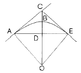
- A : 원곡선시점(B.C)
- B : 원곡선중점(S.P)
- C : 교 점(I.P)
- D : 교차점(M.P)
(정답률: 알수없음)
19. 다음 중 경관의 구성요소가 아닌 것은?
- 경관장계
- 상호성계
- 시점계
- 투시도계
(정답률: 알수없음)
20. 다음 그림과 같은 횡단면도의 단면적은?
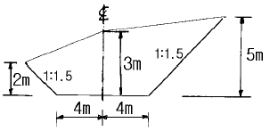
- 31.45m2
- 41.75m2
- 44.75m2
- 42.87m2
(정답률: 10%)
2과목: 사진측량 및 원격탐사
21. 촬영고도 3000m, 좌측사진의 주점기선장이 70mm이고, 우측사진의 주점기선장이 50mm일 때에 시차차 1.5mm인 굴뚝의 고저차는 얼마인가?
- 63m
- 75m
- 83m
- 95m
(정답률: 알수없음)
22. 항공사진의 축척은?
- 촬영 카메라의 화면거리에 반비례하고 비행고도에 비례한다.
- 촬영 카메라의 화면거리에 비례하고 비행고도에 반비례한다.
- 촬영 카메라의 화면거리와 비행고도에 비례한다.
- 촬영 카메라의 화면거리와 비행고도에 반비례한다.
(정답률: 알수없음)
23. 항공사진측량에서 주로 이용되는 사진은?
- 거의 수직사진
- 파노라마사진
- 고각도 경사사진
- 저각도 경사사진
(정답률: 알수없음)
24. 표고 600m 지점을 화면거리 15cm의 카메라로 고도 3000m 상공에서 촬영했을 때의 사진 축척은?
- 1/12,000
- 1/16,000
- 1/20,000
- 1/24,000
(정답률: 알수없음)
25. 다음 그림의 상호표정에서 조정가능한 인자는?
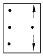
- ψ
- κ
- by
- ω
(정답률: 알수없음)
26. 다음은 원격탐사(Remote Sensing)에 대한 설명이다. 틀린것은?
- 인공 위성에 의한 원격탐사는 짧은 시간내에 넓은 지역을 동시에 관측할 수 있다.
- 다중 파장대에 의하여 자료를 수집하므로 원하는 목적에 적합한 자료의 취득이 용이하다.
- 관측자료가 수치적으로 기록되어 판독이 자동적이며, 정성적 분석이 가능하다.
- 반복 측정이 불가능하며 좁은 지역의 측정에 적당하다.
(정답률: 알수없음)
27. 항공사진에서 사진의 중심점으로 주점을 사용하는 경우는 다음 어느 것인가?
- 화면의 경사가 3° 이내에서 비고가 클 때
- 엄밀한 연직사진 또는 화면의 경사가 3° 이내에서 지면의 비고가 크지 않을 때
- 화면의 경사 및 지면의 비고가 똑같이 클 때
- 지면이 평탄하며 화면의 경사가 클 때
(정답률: 알수없음)
28. 항공사진은 다음 중 어떤 원리에 의해 지형· 지물을 촬영한 것인가?
- 정사투영
- 중심투영
- 등적투영
- 평행투영
(정답률: 알수없음)
29. 지상사진측량에 대한 설명으로 잘못된 것은?
- 지상사진측량은 전방교회법이다.
- 지상사진은 시계가 펼쳐진 촬영지점이 필요하다.
- 항공사진에 비해 평면의 정확도가 좋다.
- 협소한 지역에서는 항공사진측량에 비해 경제적이다.
(정답률: 알수없음)
30. 항공사진 촬영시 사진기의 경사한계는 얼마인가?
- 3°
- 7°
- 8°
- 10°
(정답률: 알수없음)
31. 넓은 지역의 집성사진(mosaic)을 만들 때 다음 어느 방법이 가장 합리적인가?
- 지물집성
- 사진 중앙부만 집성하는 방법
- 주점기선 집성
- 사선법에 의한 집성
(정답률: 알수없음)
32. 아메리카 C-계수와 관계 없는 것은?
- 사진의 비행고도와 도화의 최소등고선 간격과의 비
- 도화기의 성능 및 정밀도에 따라 일정
- 도화기의 높이측정 정밀도
- 도화기의 평면측정 정밀도
(정답률: 알수없음)
33. 비고 300m이고 20 × 40km인 장방형지역을 해발고도 3300m에서 화면거리 150mm의 카메라로 촬영했을 때 사진 매수는? (단, 종중복 60%, 횡중복 30%, 화면크기 23cm × 23cm 입체모델의 면적으로 간이법으로 계산한다)
- 136매
- 154매
- 181매
- 281매
(정답률: 알수없음)
34. 높은 탑과 같은 지물의 판독 및 주위 색조의 대조가 어려운 지형에 이용되는 판독요소는?
- 모양
- 질감
- 음영
- 색조
(정답률: 알수없음)
35. 다음 중 ( )에 가장 알맞는 말은?
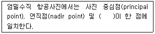
- 사진 지표(fiducial mark)
- 노출 중심점(perspective center)
- 지상 기준점(ground control point)
- 등각점(isocenter)
(정답률: 알수없음)
36. 다음 중 사진지도의 특성을 바르게 설명한 것은?
- 운반하는데 편리하다.
- 넓은 지역을 한 눈에 알 수 있다.
- 산지와 평지에서 지형이 일치한다.
- 사진의 색조가 다르므로 오판할 우려가 없다.
(정답률: 알수없음)
37. 기복이 심한 지형을 경사로 찍은 사진으로 정밀사진지도를 만들기 위하여 필요한 작업은?
- 시차측정에 의한 사진제작
- 정사투영기에 의한 사진제작
- 편위수정기에 의한 사진제작
- 세부도화
(정답률: 알수없음)
38. 항공사진의 판독에 대하여 설명한 다음 사항 중 틀린 것은?
- 사진상의 크기나 형은 피사체의 내용을 판독하기 위한 중요한 요소이다.
- 사진의 음영은 촬영고도에 따라 변하기 때문에 판독에는 불필요한 요소이다.
- 사진의 색조는 피사체로 부터 반사광량에 의하여 변하나 사용 필름, 필터 및 현상시의 사진처리에도 영향을 받는다.
- 사진의「결」은 사진상의 크기, 색조, 형 등의 제요소가 조합되어 이루어진다.
(정답률: 알수없음)
39. 촬영고도 2000m에서 화면거리 153mm의 카메라로 촬영할 때 30m의 교량이 항공사진상에 나타나는 길이는?
- 2.7 mm
- 2.5 mm
- 2.3 mm
- 2.1 mm
(정답률: 알수없음)
40. 항공사진의 축척을 결정하는 다음 요건들 중 우선 순위에서 가장 거리가 먼 것은?
- 지도의 축척 및 등고선 간격
- 도화기의 성능 및 정밀도
- 비행기의 상승한도와 비행속도
- 기상상태
(정답률: 알수없음)
3과목: GIS 및 GPS
41. 미지점의 표척을 시준한 값을 무엇이라 하는가?
- 후시
- 전시
- 중간시
- 이기점
(정답률: 알수없음)
42. 트랜싯으로 수평각을 관측할 때 여러 오차를 소거하기 위하여 정· 반위 관측값을 평균한다. 그러나 이러한 방법으로도 소거되지 않는 오차는?
- 시준축 오차
- 연직축 오차
- 외심 오차
- 수평축 오차
(정답률: 알수없음)
43. 각이 A, B, C 이고 대응 변이 a, b, c 인 삼각형에서 ∠A = 22° 00′ 56″ , ∠C = 80° 21′ 54″ , b = 310.95 m일 때 a 변의 길이는?
- 119.34 m
- 310.95 m
- 313.86 m
- 526.09 m
(정답률: 알수없음)
44. 공공부문에서 지형공간정보체계의 활용분야 중 시설물 관리에 속하는 것은?
- 자원관리
- 환경관리
- 자산관리
- 도로, 철도관리
(정답률: 알수없음)
45. 다음 중 도형정보가 아닌 것은?
- 지적도
- 도시계획도
- 지형도
- 도로대장
(정답률: 알수없음)
46. 스타디아 측량을 할 때 시준고를 기계고와 같게 하는 이유는?
- 오차를 없애기 위해서
- 시준상 편리를 위해서
- 계산을 간단하게 하기 위해서
- 표척과 기계의 시준선이 일직선상에 오게하기 위해서
(정답률: 알수없음)
47. 지구의 곡률로 인하여 발생하는 오차는?
- 구차
- 기차
- 양차
- 우차
(정답률: 알수없음)
48. A,B,C를 수준측량한 결과 AP = 72.547m, BP = 72.321m, CP = 72.483m 였다면 P점의 최확치는?
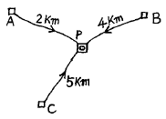
- 72.354m
- 73.744m
- 72.474m
- 72.527m
(정답률: 알수없음)
49. 삼각측량에서 그림과 같은 사변형망의 각조건식 수는?
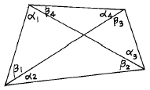
- 1개
- 2개
- 3개
- 4개
(정답률: 알수없음)
50. 다음 중 자료의 입력과정에서 발생하는 오류와 관계 없는 것은?
- 공간정보가 불완전하거나 중복된 경우
- 공간정보가 부정확한 위치에 있는 경우
- 공간정보가 왜곡된 경우
- 공간정보가 정확한 축척으로 표현된 경우
(정답률: 알수없음)
51. 100m2인 정방형의 토지를 0.1m2까지 정확히 구하기 위하여 요구되는 1변의 길이는 어느 정도까지 정확하게 관측하여야 하는가?
- 4mm
- 5mm
- 10mm
- 12mm
(정답률: 알수없음)
52. 다음 트래버어스 측량결과에서
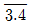
측선의 방위각은?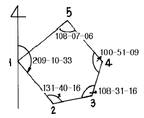
- 10° 13' 14"
- 89° 22' ⑤"
- 160° 50' 49"
- 298° 20' 20"
(정답률: 알수없음)
53. 다음 중 GPS의 위치 결정원리로 가장 타당한 것은?
- 관측점의 위치좌표가(x, y, z)이므로 2개의 위성에서 전파를 수신하여 관측점의 위치를 구한다.
- 위성궤도에 대해 종방향으로는 정사투영에 의해, 횡 방향으로는 중심투영에 의해 영상이 취득된 후 3차원 위치해석을 한다.
- 관측점 좌표(x, y, z)와 시간 t의 4차원 좌표의 결정방식으로 4개 이상의 위성에서 전파를 수신하여 관측점의 위치를 구한다.
- 레이저광 펄스를 이용하여 우주공간과의 관계를 감안하여 지상 관측점의 위치(x, y, z)를 구한다.
(정답률: 알수없음)
54. A부터 B까지의 방향각이 120° 이고 거리가 100m일 때 B점의 좌표는? (단, A점의 좌표는 X = +1,000m , Y = -500m 이다)
- X = -50.0m , Y = +86.6m
- X = +950.0m , Y = -413.4m
- X = +1,⑤0.0m , Y = -586.6m
- X = +86.6m , Y = -50.0m
(정답률: 알수없음)
55. 수평각 측정에서 5분 이하를 생략하였을 때 거리측량은 얼마의 정밀도로 측정해야 측각과 측거의 정도에 균형이 맞는가?
- 약 1/690
- 약 1/41,250
- 약 1/1,600
- 약 1/1,900
(정답률: 알수없음)
56. 다음 스타디아 측량에 관한 설명 중 옳지 않은 것은?
- 간접거리 측정이며 정도는 낮은편이다.
- 계산과 제도에서 시간과 노력이 거의 필요치 않는다.
- 수평거리와 고저차를 동시에 측정할 수 있다.
- 고저차가 심하거나 구역이 넓은 곳에서 거리, 고저차 측정이 쉽고 신속하다.
(정답률: 알수없음)
57. 1/25000도면상에서 AB점간의 도상거리가 20cm였다. 측선 AB의 실거리와 두점 간의 경사는?
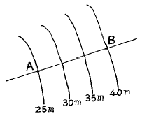
- D=5,000m, i=1/300
- D=4,000m, i=1/333
- D=5,000m, i=1/333
- D=4,000m, i=1/300
(정답률: 알수없음)
58. 다음 각도의 측정단위에 관한 사항 중 옳은 것은?
- 원주를 360등분 할 때 호에 대한 중심각을 1라디안이라 한다.
- 원의 반경과 같은 길이의 호에 대한 중심각을 1그레이드(g)라 한다.
- 90° 는 100그레이드(g)이고 ρ ° 는 180° /π 이다.
- 원주를 400등분 할 때 그 한호에 대한 중심각을 1°라 한다.
(정답률: 알수없음)
59. 지구를 장반경이 6,370㎞, 단반경이 6,350㎞인 타원형이라할 때 편평률을 구한 값은?
- 1/320
- 1/430
- 1/500
- 1/630
(정답률: 알수없음)
60. 트래버스측량에서 전 측선의 길이가 1,100m이고 위거오차가 +0.23m, 경거오차가 -0.35m일 때 폐합비는?
- 약1/4,200
- 약1/3,200
- 약1/2,600
- 약1/1,400
(정답률: 알수없음)
4과목: 측량학
61. 기본측량에 의하여 생긴 손실보상에 대한 설명으로 옳은 것은?
- 국립지리원장이 관할 시장 또는 도지사와 협의하여 결정한다.
- 측량심의회에서 결정한다.
- 건설교통부장관이 관할시장 또는 도지사와 협의하여 결정한다.
- 국립지리원장이 손실받은 자와 협의하여 결정한다.
(정답률: 알수없음)
62. 정당한 사유없이 측량의 실시를 방해한 자에 대한 벌칙으로 옳은 것은?
- 3년 이하의 징역 또는 1000만원 이하의 벌금
- 2년 이하의 징역 또는 500만원 이하의 벌금
- 1년 이하의 징역 또는 300만원 이하의 벌금
- 200만원 이하의 과태료
(정답률: 알수없음)
63. 다음 중 공공측량에 속하는 것은?
- 기본측량 외의 측량 중 지방자치 단체가 실시하는 측량
- 수로업무에 의한 수로측량
- 지적법에 의한 지적측량
- 국지적측량 및 고도의 정확도를 필요로 하지 아니하는 측량으로서 건설교통부장관이 정하여 고시하는 측량
(정답률: 알수없음)
64. 기본측량을 위한 영구표지를 설치할때에 국립지리원장이 행할 사항은?
- 표지의 종류와 설치장소를 당해 지역의 경찰서장에게 통지한다.
- 표지의 종류와 설치장소를 시·도지사에게 통지한다.
- 표지의 종류와 설치장소를 측량회사에게 통지한다.
- 표지의 종류와 설치장소를 당해시장, 군수에게 통지 한다.
(정답률: 10%)
65. 공익사업의 기업자는 수용 또는 사용되는 토지에 대한 보상을 수용 또는 사용하기 전까지 관할 토지수용위원회가 재결한 보상금을 지급하여야 하는데 다음의 경우는 보상금을 공탁할수가 있다. 이중 적당하지 않은 것은?
- 보상금을 받을자가 그 수령을 거부 하거나 보상금을 수령할수 없을 때
- 보상금의 수령일자가 지났을 때
- 기업자가 관할 토지수용위원회가 재결한 보상금액에 대하여 불복이 있을 때
- 압류 또는 가압류에 의하여 보상금의 지불이 금지되었을 때
(정답률: 0%)
66. 지도 도곽의 제한오차는?
- ± 0.1mm 이내
- ± 0.2mm 이내
- ± 0.5mm 이내
- ± 1.0mm 이내
(정답률: 알수없음)
67. 공공측량의 측량 성과와 측량 기록을 보관하고 이를 일반인에게 열람시켜야 하는 자는?
- 국립지리원장
- 시장 또는 도지사
- 건설교통부장관
- 공공측량계획기관
(정답률: 알수없음)
68. 측량업 등록의 결격 사유에 해당되지 않는 경우는?
- 국가보안법을 위반하여 금고 이상의 형의 집행유예선고를 받고 그 집행유예기간중에 있는자
- 등록수첩을 대여하여 측량업 등록이 취소된후 2년이 경과된자
- 임원중에 파산선고를 받고 복권되지 아니한 자가 있는 법인
- 금치산선고를 받은자
(정답률: 알수없음)
69. 다음의 측량표 중에서 영구표지가 아닌 것은?
- 검조의
- 측표
- 검조장
- 방위표석
(정답률: 알수없음)
70. 토지수용 위원회는 심의에 필요하다고 인정할 때는 다음 각항에 기재된 행위를 할 수가 있다. 이중 적당하지 않은 것은?
- 기업자,토지소유자, 관계인 또는 참고인을 출석하게 하거나 의견서 또는 자료의 제출을 요구할 수 있다.
- 감정인에게 감정평가를 의뢰하거나 출석을 요구할 수있다.
- 토지수용 위원회의 위원 또는 그 사무를 담당하는 직원으로 하여금 실지 조사를 시킬 수가 있다.
- 토지수용 위원회의 위원은 현지를 조사할 때 그사유서만 가지고 타인의 토지에 출입을 할 수가 있다.
(정답률: 알수없음)
71. 공공 측량으로 인한 손실의 보상은 그 측량계획기관의 장이 손실을 받은자와 협의하여 행하되 협의가 성립되지 아니할 경우는 계획기관 또는 손실을 받은자가 토지수용위원회에 재결신청을 하는데 이때 제출한 신청서의 내용중 옳지 않은 것은?
- 재결의 신청자와 상대방의 성명 및 주소
- 손실 발생의 사실
- 협의의 내용
- 손실자의 가정환경
(정답률: 알수없음)
72. 측량기술자의 측량용역 현장에의 배치기준 중 기본측량용역의 경우는?
- 특급기술자 1인이상
- 고급기술자 1인이상
- 중급기술자 1인이상
- 중급기술자 2인이상
(정답률: 알수없음)
73. 다음 중 측량법에서 가장 무거운 벌칙을 받는 경우는?
- 측량표의 이전행위자
- 국립지리원장이 고시한 기본측량의 성과에 저촉되는 측량성과를 사용한 자
- 측량업의 등록을 하지 아니하고 영업을 한 자
- 다른 사람의 입찰행위를 방해한 자
(정답률: 알수없음)
74. 등고선에 의하여 표현되는 것은 어느 것인가?
- 지물
- 지류
- 지모
- 지상
(정답률: 알수없음)
75. 공공측량의 작업규정기준에 관한 규칙에 대한 사항 중 옳지 않은 것은?
- 삼각측량에서 수평각 및 연직각의 관측은 각관측법을 사용한다.
- 수준측량에서 표척과 수준의 거리는 60m정도로 한다.
- 항공사진의 촬영비행은 태양고도가 산지에서 30° , 평지에서 25° 이상일 때 시행한다.
- 항공사진은 사진면의 경사가 10그레이드이내인 수직 사진이어야 한다.
(정답률: 알수없음)
76. 다음 설명 중 옳지 않은 것은?
- 기본측량의 측량성과를 사용하여 지도를 간행하고 판매하고자 하는 자는 지도를 간행한 후 국립지리원장의 심사를 받아야 한다.
- 기본측량의 측량성과는 국립지리원장이 고시한다.
- 기본측량성과와 측량기록의 사본의 교부는 국립지리원장에게 신청하여야 한다.
- 시장, 군수 또는 구청장은 그 관할구역안에 있는 측량표를 감시하여야 한다.
(정답률: 알수없음)
77. 1:5,000 지형도상에 표시하는 행정경계선은 어느 단위까지 표시하도록 규정되어 있는가?
- 시계
- 군계
- 면계
- 리계
(정답률: 알수없음)
78. 측량법에서 정의된 용어에 대한 설명중 옳지 않은 것은?
- 측량성과라 함은 당해측량에서 얻은 최종결과를 말한다.
- 측량기록이라 함은 측량성과를 얻을 때까지의 측량에 관한 작업의 기록을 말한다.
- 발주자라 함은 측량용역을 측량업자에게 도급주는 자를 말하며, 수급인으로서 도급받은 용역을 하도급 주는자를 포함한다.
- 측량업이라 함은 기본측량, 공공측량 또는 일반측량의 용역을 도급받는 영업을 말한다.
(정답률: 알수없음)
79. 도지명위원회는 지명에 관한 조정, 결정사항을 며칠이내에 중앙지명위원회에 보고하여야 하는가?
- 15일 이내
- 7일 이내
- 10일 이내
- 20일 이내
(정답률: 알수없음)
80. 측량업의 양도, 양수 또는 법인의 합병으로 측량업자의 지위를 승계한 자는 그 승계사유가 발생한 날로부터 몇 일전까지 신고를 하여야 하는가?
- 60일
- 30일
- 20일
- 10일
(정답률: 알수없음)
직각삼각형의 면적은 밑변과 높이를 곱한 후 2로 나누면 됩니다.
직각삼각형의 밑변은 7m, 높이는 9m 이므로,
직각삼각형의 면적 = (7 × 9) ÷ 2 = 31.5 m² 입니다.
반원의 면적은 반지름의 제곱에 3.14를 곱한 값입니다.
반원의 반지름은 4m 이므로,
반원의 면적 = 4² × 3.14 ÷ 2 = 25.12 m² 입니다.
따라서, 전체 도형의 면적은 직각삼각형의 면적과 반원의 면적을 더한 값이 됩니다.
전체 도형의 면적 = 31.5 m² + 25.12 m² = 56.62 m²
하지만, 문제에서는 단면의 면적을 구하라고 했으므로,
전체 도형의 면적을 2로 나누어주면 됩니다.
단면의 면적 = 56.62 m² ÷ 2 = 28.31 m²
하지만, 보기에서는 단위가 m²이므로,
단면의 면적 = 28.31 m² × 2 = 56.62 m²
따라서, 정답은 "63.5 m²"이 됩니다.